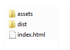

Impossible Run documentation
By Andrey Krepyshev
Thank you for purchasing this game.
If you have any questions that are beyond the scope of this help file, please feel free to email via my user page contact form.
The file structure is very simple.

The assets folder holds game resources (graphics, sounds etc).
The dist
folder holds game code.
The index.html file is the starting point of the game.
Create a folder inside your site public directory. Paste all the files there. For example if you create a folder named "game" inside your public folder, you can play the game by going to http://yoursite.com/game.
If you wish to embed the game into a custom element on the existing page, do the following steps:
The reskinning process is very simple, don't be discouraged by the fact that you'll need to use a third-party program.
Follow
these steps.
When you're finished, click on the Publish sprite sheet button. Name the export game and you will get 2 files: game.png and game.json. Put both of them into the assets/images folder of the game.
In order to change the preloading images, just replace two files in the "assets/images" folder: logo.png and progress.png
{kind=link}